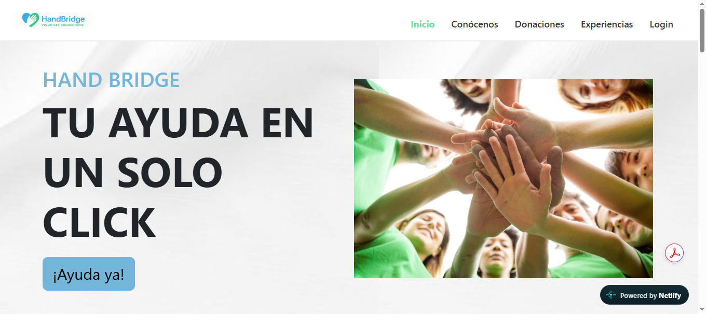
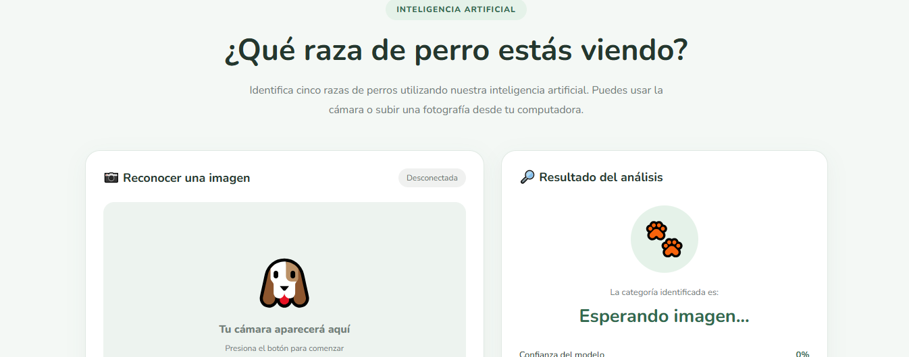
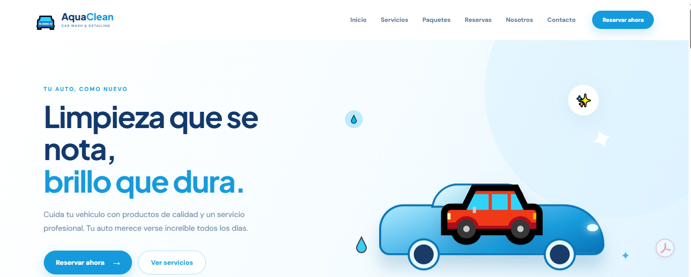

HAND BRIDGE
A volunteer platform that connects people who want to help with organizations in need. It allows users to discover volunteer opportunities, learn about organizations, and support their causes.

DogVision
An interactive website that uses artificial intelligence to identify five dog breeds: Chihuahua, German Shepherd, Husky, Golden Retriever, and Maltese. Users can upload images or use their webcam to recognize dogs quickly and easily.

The Internet Cloud
An educational website designed to help people understand cloud computing through clear information, examples, and multimedia resources.

AquaClean
A website for a car wash and detailing business, with services, packages, and an online booking option.